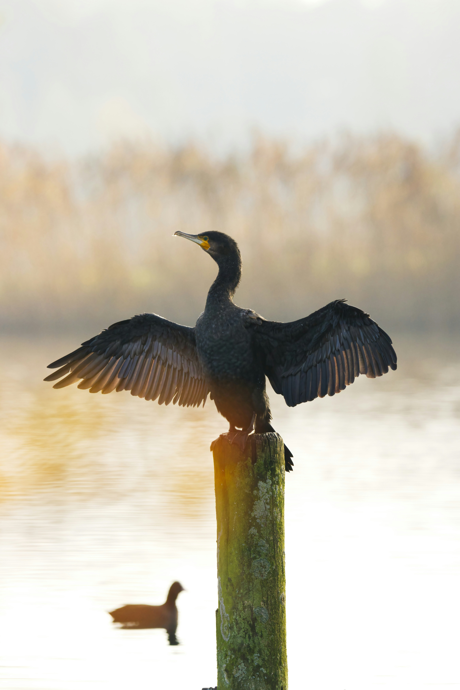

The Little Cormorant is a small dark waterbird that is common across South Asia. It spends much of its time in or around freshwater, diving beneath the surface to catch fish and other aquatic prey. After feeding, it often perches with its wings spread to dry its plumage. It is highly adaptable and occurs in ponds, lakes, rivers, canals, marshes, and flooded fields.